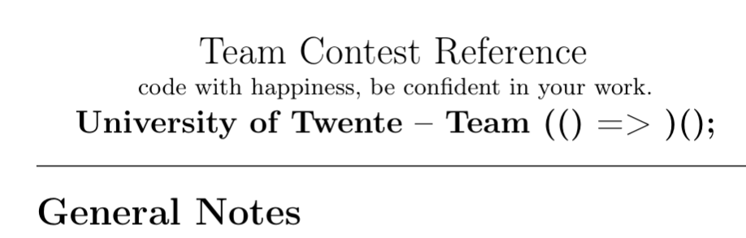

2025/2026 ICPC Regional Performance
Intro
ICPC
The International Collegiate Programming Contest is an incredibly renowned competitive programming competition with various stages, in this document I walk through my experience this 2026 ICPC in my three regional contests.
Team Found
Valyn, Anton and I formed the sudden team “(() => {})();” – which indeed is meant to represent the no-ops lambda function in javascript or “arrow-function” – thought of by our one and only Valyn on the first day (the initial orchestrator.)

Contests
TAPC, UTwente, Enschede, NL
Initially, we participated in the Twents Algorithms Programming Contest (TAPC) at my university: University of Twente where we had a lot of fun, with a lax competition unexpectant of the continutation of this.
BAPC, TUD, Delft, NL
Intro
Subsequently, the next month as time passed by almost immediately, we qualified for the Benelux Algorithms Programming Contest (BAPC) being held at Technical University Delft. This was our first ever competition which was at such a scale and our nerves were racked to the computers (though there was only one.) Without a coach, this all was extremely difficult; however we persisted, formed a more unified Team Reference Document (TCR) which was made in the times when my proficiency with LaTeX wasn’t present (seen by the un-printed {} in the team name[1]), and nor was my knowledge in this field worth much (also, I bought a HUGE QWERTY-US keyboard shown below to practice with (I usually use QWERTZ, but everyone else uses QWERTY-US.)). As you can imagine, our priorities were more present in complaining about our short stay in Rijswijk instead of Delft to cut costs (there was a beautiful arabic restaurant, though) (we almost slept with a 40-year-old in the same dorm as-well =)).
The aforementioned “HUGE” Keyboard:
Result
After the contest, our resolutions were moderate, wishing we could have performed better. However, we all saw we did quite a lot so far and were satisfied with the performance amidst the competiton with good solutions and program code.
NWERC, KIT, Karlsruhe, Germany
Intro
To plan for future competitions far ahead, we decided to string along a Year 2 senior, Adrian in our University to be our coach for the duration of the semester. Although, as it were looking like there was nothing more till next year: We get accepted to Northwestern Europe Regional Contest (NWERC)! This was exciting, finally we get to make another chance.
Concerns
There were a few admistrative, and logistical costs to take us in the Dutch university to Karlsruhe Institute of Technology (KIT); incuring MIN ca. €250 / person, and for this reason we have started works of our own study association described further. Leaving this aside, the trip to germany was fun, tiring and exhausting, sure, but fun.I think that was one of the most enjoyable FlixBus rides I have ever had since we were more focused on flipping a Swapfiets bicycle upside down (contemporary Dutch culture which might be illegal and hence filtered (see below)), speaking till 4:// am when there was work to do the next day and coding our beautiful team website arrowfunc.now made by Valyn on that very day. We then register at the new accomodation, sleep in, and get ready for the next day, where we mostly just take EVERY goodie IMAGINABLE from the sponsors. I think there is a very really stress-release behind this. I recommend everyone to take as many goodies as they can from an event, and goodness did we score, I believe the valuation of the goods were approximately €150. I think that is apt reimbursement. Don’t believe me? Check the picture[2]. Those little jetbrains pins alone on the bottom right cost ~€4 each (see under reference) (and these were what I got, my teammates got similar returns.)
The aforementioned upside down bike,
Result
After thinking of who to gift these goodies to (families and friends) it quickly took time to do the real contest, we improved the TCR which helped, it was fun, exciting, and most of all tough. We hadn’t solved as many problems as we’d hoped due to ill health. However, we still put in the effort, Anton did an extremely impressive job, we all came up with interesting solutions and above all it was a lovely experience – and I would always do it again. I now do competitive programming problems for fun, and in my spare time, and I recommend you too! to me, it feels like playing chess. I love this stuff. The train back to Enschede while being in Dortmund Station at midnight sucked, but that’s how life is sometimes.
This is us in the hall:
Conclusion
I am incredibly grateful to my team, coach and university, since without them I wouldnt have done nearly as much, and overall this was one of the most thrilling experiences I have had, along with now fostering the ideas of creating my own study assocation for the betterment of the competitive programming in my university and financial/mental compensation, and for the creation of the social groups for it.
I have also in addition am grateful to have visited the beautiful cities Delft and Karlsruhe from these events, and the people I have met here.
A small landscape gallery:


- 1.

↩ - 2.
 ↩
↩ - 3.View the Disatrous prices of Jetbrains Pins, the price as of 11/2025:
 ↩
↩